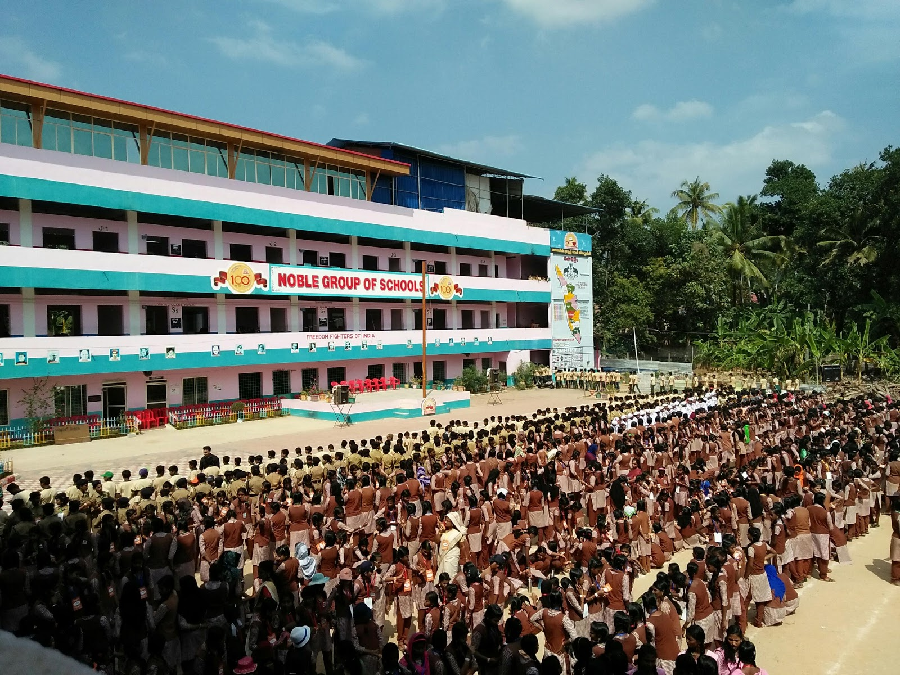
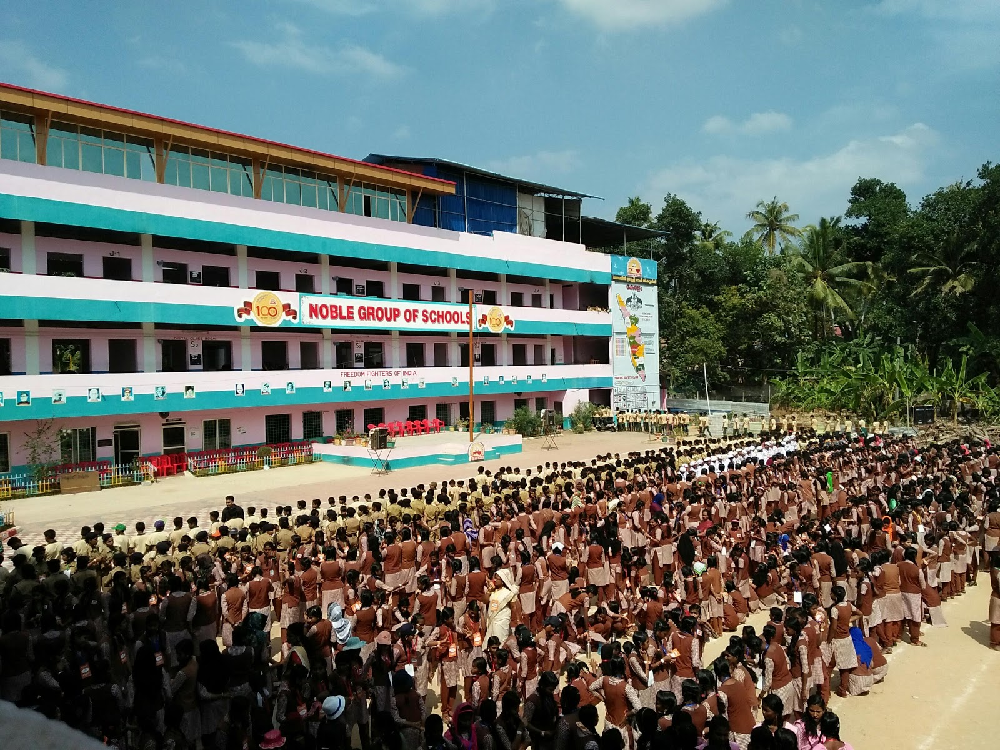

National Skill Training Institute for Women (Erstwhile Regional Vocational Training Institute for Women), Kazhakuttom, Trivandrum, Kerala is imparting Vocational Training as required by the Local Industry and also providing need based training to become self-entrepreneur. National Skill Training Institute comes under Government of India, Ministry of Skill Development & Entrepreneurship (Erstwhile Ministry of Labour & Employment, Directorate General of Employment and Training (DGE&T)), Women’s Training cell under Directorate General of Training. This exclusive institute for women facilitates regular long term training programme in various disciplines and short term training programmes . Long term courses are conducted in levels such as Craft Instructor Training Scheme (CITS) ,Craftsmen Training Scheme (CTS), and Advanced Diploma in IT, Networking and Cloud. Institute is also the Extension Centre for IGNOU, NIOS, PMKVY/SHI. And also proposed to conduct short term courses under various SSC. The 'Skill Hubs Initiative' under PMKVY 3.0 aims at creating shared infrastructure, aligned with the needs of the local economy which addresses the vocational training needs of all target segments.
SSV GHSS CHIRAYINKEEZHU was established in 1917 and it is managed by the Pvt. Aided. It is located in Rural area. It is located in ATTINGAL block of THIRUVANANTHAPURAM district of Kerala. The school consists of Grades from 5 to 12. The school is Girls and it doesn't have an attached pre-primary section. The school is Not Applicable in nature and is not using school building as a shift-school. Malayalam is the medium of instructions in this school. This school is approachable by all weather road. In this school academic session starts in April.
SSV GHSS CHIRAYINKEEZHU was established in 1917 and it is managed by the Pvt. Aided. It is located in Rural area. It is located in ATTINGAL block of THIRUVANANTHAPURAM district of Kerala. The school consists of Grades from 5 to 12. The school is Girls and it doesn't have an attached pre-primary section. The school is Not Applicable in nature and is not using school building as a shift-school. Malayalam is the medium of instructions in this school. This school is approachable by all weather road. In this school academic session starts in April. The school has Private building. It has got 20 classrooms for instructional purposes. All the classrooms are in good condition. It has 2 other rooms for non-teaching activities. The school has a separate room for Head master/Teacher. The school has Pucca boundary wall. The school has have electric connection. The source of Drinking Water in the school is Well and it is functional. The school has 0 boys toilet and it is functional. and 5 girls toilet and it is functional. The school has a playground. The school has a library and has 2500 books in its library. The school does not need ramp for disabled children to access classrooms. The school has 17 computers for teaching and learning purposes and all are functional. The school is having a computer aided learning lab. The school is Provided and Prepared in School Premises providing mid-day meal.